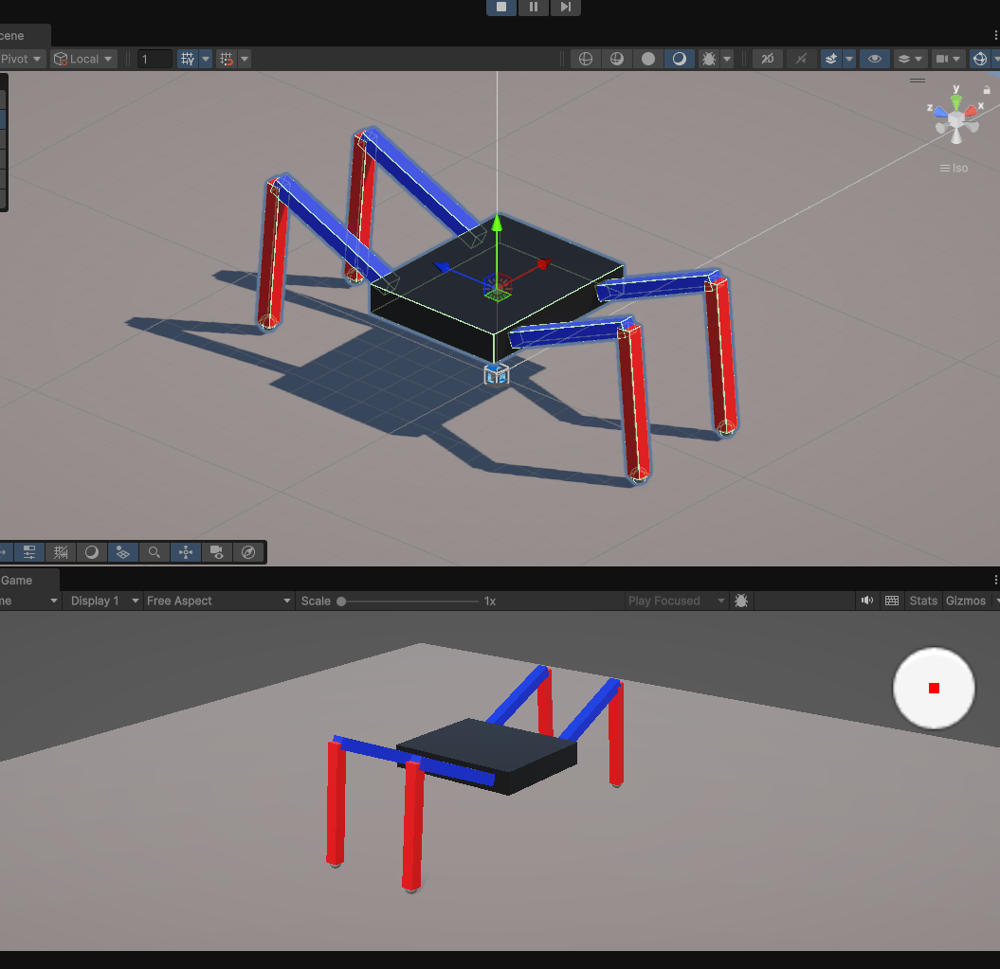
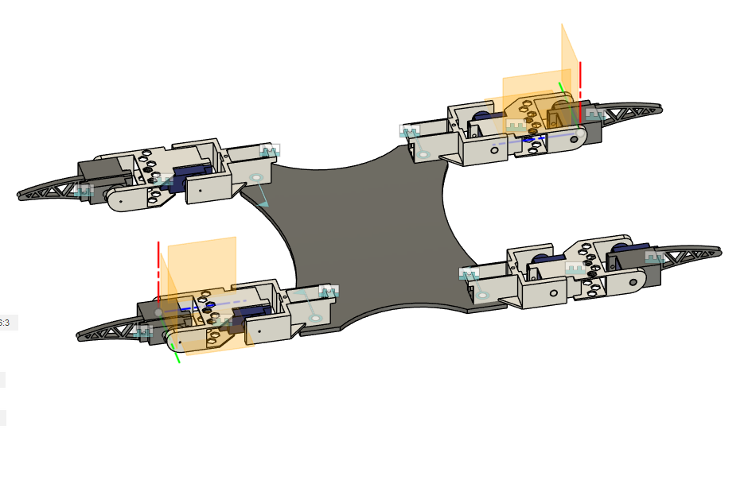
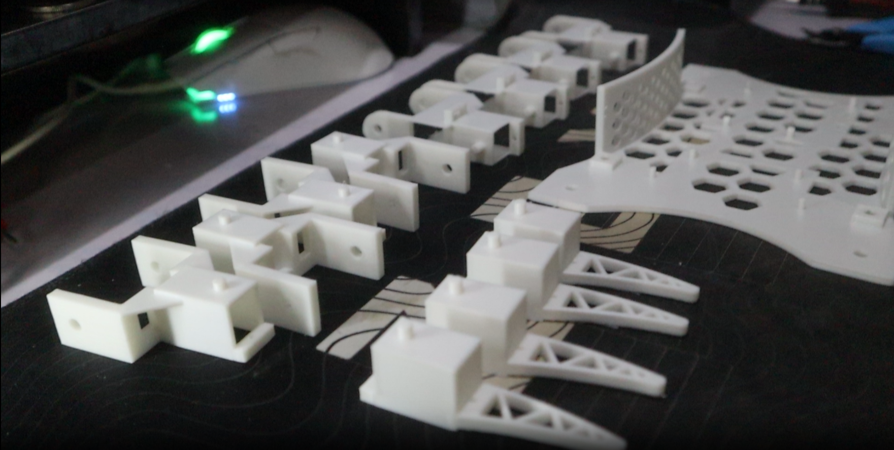
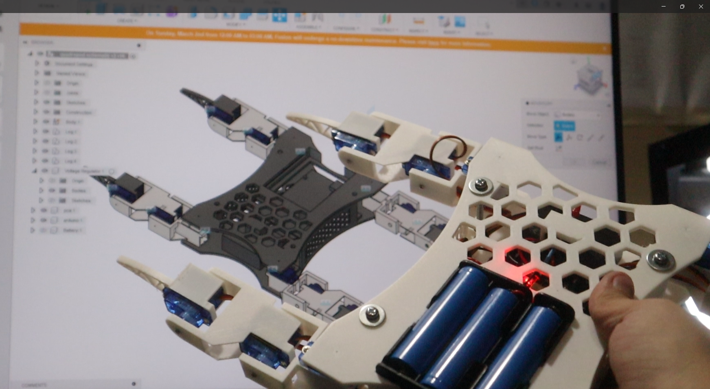
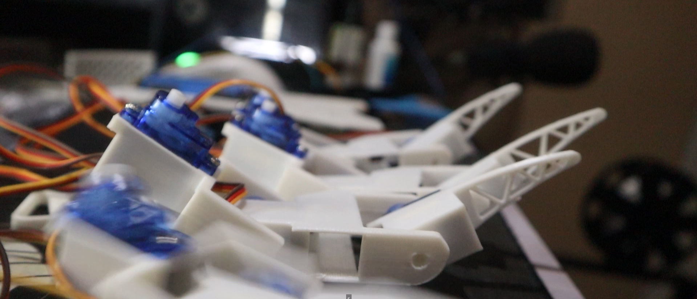

Quadruped Robot (v1)
A custom-designed, 12-DOF (Degrees of Freedom) quadruped robot built to explore robotic locomotion and inverse kinematics. Each of the four legs is driven by three servos (two for vertical lift, one for horizontal sweep), allowing for complex, multi-directional movement and gait generation.
Hardware & Materials Stack
- Microcontroller: Arduino Uno
- Actuators: 12x SG90 Micro Servo Motors
- Chassis: Custom 3D Printed Casing (Designed in Fusion 360)
- Power System: 3x 3.6V 18650 Batteries
- Motor Driver: PCA9685 16-Channel PWM Servo Driver
- Control: Flysky Controller & Receiver for remote operation
Development Rundown
The development of the quadruped was a multi-stage process spanning roughly a month and a half.
1. Simulation & Modeling (Unity)
Before committing to hardware, I performed the necessary kinematic math and utilized Unity to simulate the robot's movement. This allowed me to verify the gait algorithms and joint limits in a physics-based environment.

2. Mechanical Design (Fusion 360)
Once the simulation proved successful, I designed the mechanical chassis in Fusion 360. The design phase took approximately one week to ensure the servo mounts, battery compartments, and structural joints were optimized for 3D printing. The subsequent assembly, wiring, and code integration took an additional month.

Inverse Kinematics & Mathematical Logic
The most significant challenge of this project was the control system. With 12 independent servos, simple "turn left/right" commands are insufficient for walking. To maintain balance, lifting one leg requires the other three to cooperatively shift the robot's center of gravity.
To achieve coordinated locomotion, I implemented a custom Inverse Kinematics (IK) engine:
- Forward Kinematics (FK): Using the Unity simulation, I mapped the specific angles of all 12 servos to calculate the precise spatial coordinates (X, Y, Z) of the end-effectors (feet).
- Inverse Kinematics (IK): I reversed the FK model. By defining a desired 3D target for a foot (e.g., "move 2cm right and 2cm forward"), the IK algorithm calculates the exact angles required for the three corresponding servos (hip-yaw, hip-pitch, and knee-pitch) to reach that coordinate.
- Gait Generation: Using the IK engine, I programmed distinct gaits:
- Trot: Diagonal legs move synchronously.
- Walk: A wave-like, continuous motion.
- Creep: High-stability gait moving one leg at a time.
The core logic relies heavily on Trigonometry and Matrix Transformations (Rotation Matrices and Translation Vectors) to convert Cartesian coordinates into joint angles (θ1, θ2, θ3). Note: The initial gait implemented a sinusoidal movement profile; future iterations will utilize cycloidal trajectories for smoother momentum transfer.

Challenges & Version 2 Roadmap


While the logic and inverse kinematics worked flawlessly in simulation and when the robot was suspended in the air, the physical build faced mechanical limitations. The budget-friendly SG90 servos lacked the necessary torque to support the full weight of the battery pack and chassis, resulting in the robot dragging itself rather than lifting cleanly.
Despite this, Version 1 served as an invaluable learning experience in CAD design, matrix math, and custom gait generation. Version 2 is currently in the planning phase and will feature high-torque servos and an upgraded power delivery system to fully realize the inverse kinematics engine in the real world.